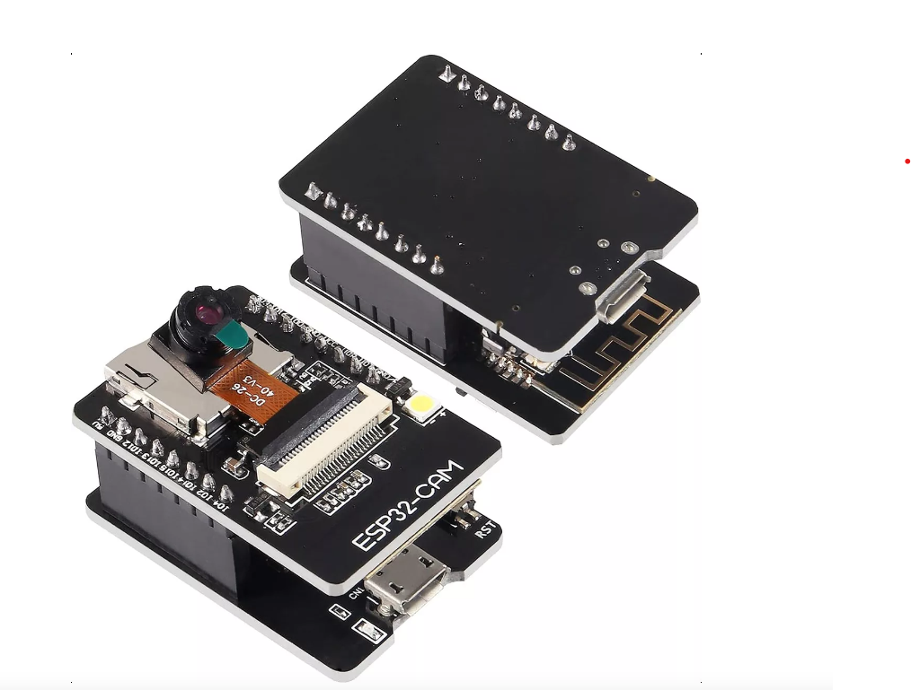
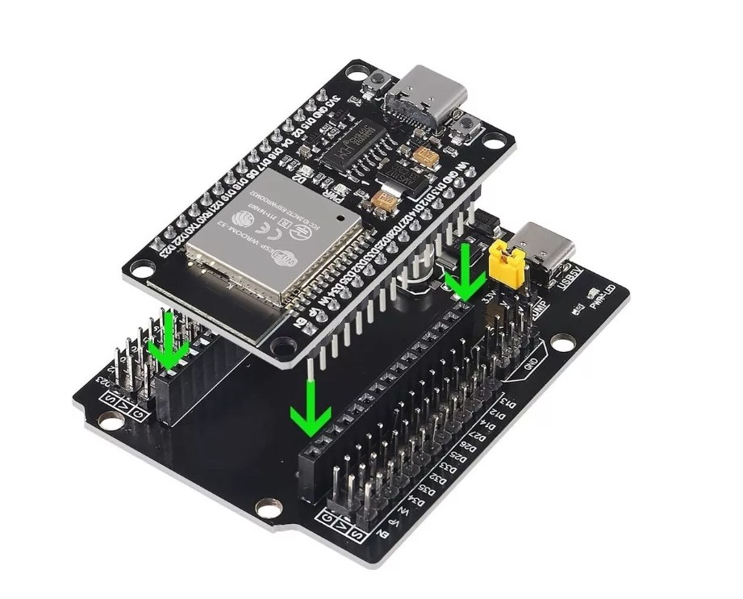
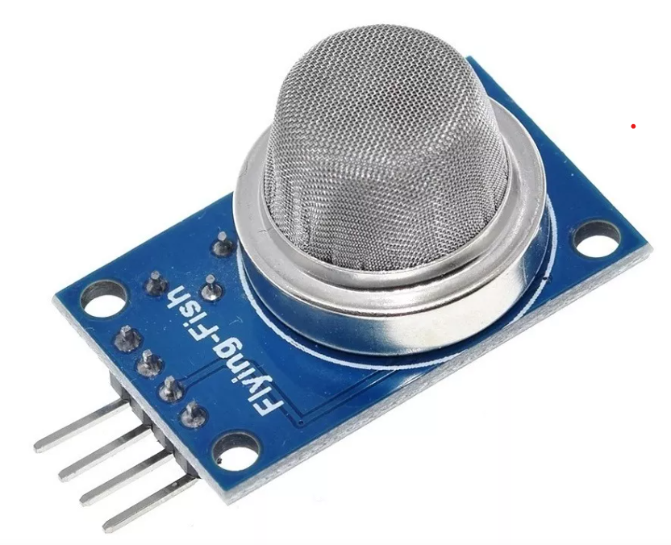

Componentes del Proyecto
Camara Vga Ov7670 640x480
Este módulo posee un sensor de imagen CMOS VGA OV7670, capaz de trabajar a un máximo de 30 fps (cuadros por segundo) a una resolución de 640 x 480 pixeles (0.3 MPx)...
Esp32cam Esp32 Con Cámara
Programable por Arduino IDE, con ejemplo de seguimiento facial (face tracking) y reconocimiento facial (face recognition). ESP32 WiFi + Bluetooth / BLE4.2...
Nodemcu Esp32 Wifi Ch340g Usb-c + Shield Placa Expansion 30p
Integra en una placa el SoM ESP-WROOM-32 que tiene como base al SoC ESP32, el convertidor USB-serial Ch340G necesario para programar por USB el ESP32, reguladores de voltaje y leds indicadores...
Mq-2 Modulo Sensor De Gas Lp Propano Butano Humo
El sensor de gas MQ2 es analógico y se utiliza en la detección de fugas de gas de equipos en los mercados de consumo y la industria. Este sensor es adecuado para la detección de gas como:

Sensor Pir Hc-sr501 Detector De Movimiento Compatible Arduin
Sensor piroeléctrico (Pasivo) infrarrojo (También llamado PIR) El módulo incluye el sensor, lente, controlador PIR BISS0001, regulador y todos los componentes de apoyo para una fácil utilización...